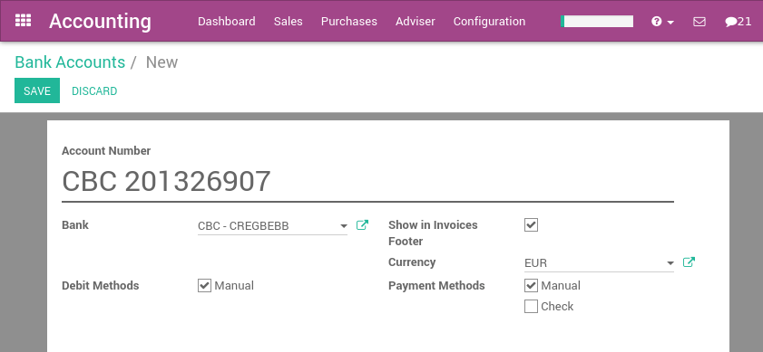

在YuanCloud,每笔交易都用公司的默认货币记录。报告都是基于该公司的货币。但另一种货币交易发生, YuanCloud保存公司的货币价值和交易的货币的价值。
当你有一个外币的银行账户,对于每笔交易,YuanCloud都保存两个值:
公司币别中的借方／贷方
银行账户币别中的借方／贷方
汇率会自动更新, 使用yahoo.com,或者欧洲央行的在线服务。
配置
激活多币种功能
为了让贵公司使用多种货币,你应该激活多种货币的模式。在会计应用程序中,进入:menuselection:menuselection:[UNKNOWN NODE title_reference] , 确保**Allow Multi-currencies** 已勾选。提供一个 [UNKNOWN NODE problematic]Currency Exchange Gain / Loss**科目,然后点击* 应用 [UNKNOWN NODE problematic]。
配置货币
一旦YuanCloud配置为支持多种货币,你应该激活您计划使用的货币。要做到这一点,菜单:menuselection:menuselection:[UNKNOWN NODE title_reference]. 。默认情况下,所有货币都已创建. 但是你应该激活你计划的货币。(激活一种货币,检查他的活跃的字段)
激活货币后,你可以配置的参数自动更新汇率。这些选项的设置也在会计应用程序中,在页面的底部:

点击* 现在更新 [UNKNOWN NODE problematic]链接到目前最新的汇率。
创建银行账户
在会计应用程序中,我们首先去:menuselection:[UNKNOWN NODE title_reference],我们创建一个新的账户。
一旦你保存这个银行账户,YuanCloud将为您创建的所有文件:
科目试算平衡表
将此帐簿显示在仪表盘上
如果选择框* 在发票页脚显示 [UNKNOWN NODE problematic], 银行信息将在发票页脚显示
例如：外币的供应商账单
根据上面的例子中,我们假设我们收到中国供应商的发票。
在:menuselection:[UNKNOWN NODE title_reference] ,你可以看到:

一旦你已经准备好支付这个账单,点击登记付款记录付款。

这是你所要做的。YuanCloud将在核销时, 自动将发票日和付款日的汇率差计入外汇损益。
注意,您可以用另一种货币支付外汇发票。在这种情况下,YuanCloud将自动完成两种货币之间的转换。
客户对账单
客户和供应商的报表是用发票货币来管理的。所以,客户(供应商)的到期金额总是用发票的货币表示。
如果同一客户有几个不同货币的发票, YuanCloud将按货币分类, 如下报告所示。

在上面的报告, Camptocamp相关的应收帐款没有用第二种货币管理,这意味着, 每笔交易都使用自己的货币。如果你喜欢,你可以为该客户的应收帐款设置第二种货币, 他所有的债务将自动转换货币。
在这种情况下,客户对账单总是只有一种货币。一般来说,这不是什么客户所希望的, 他更喜欢看到他收到发票的货币金额;